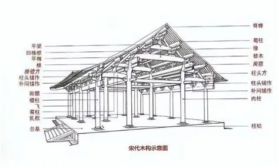
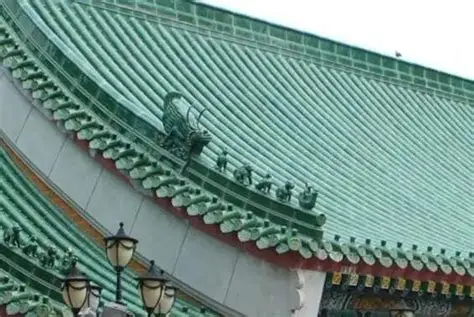
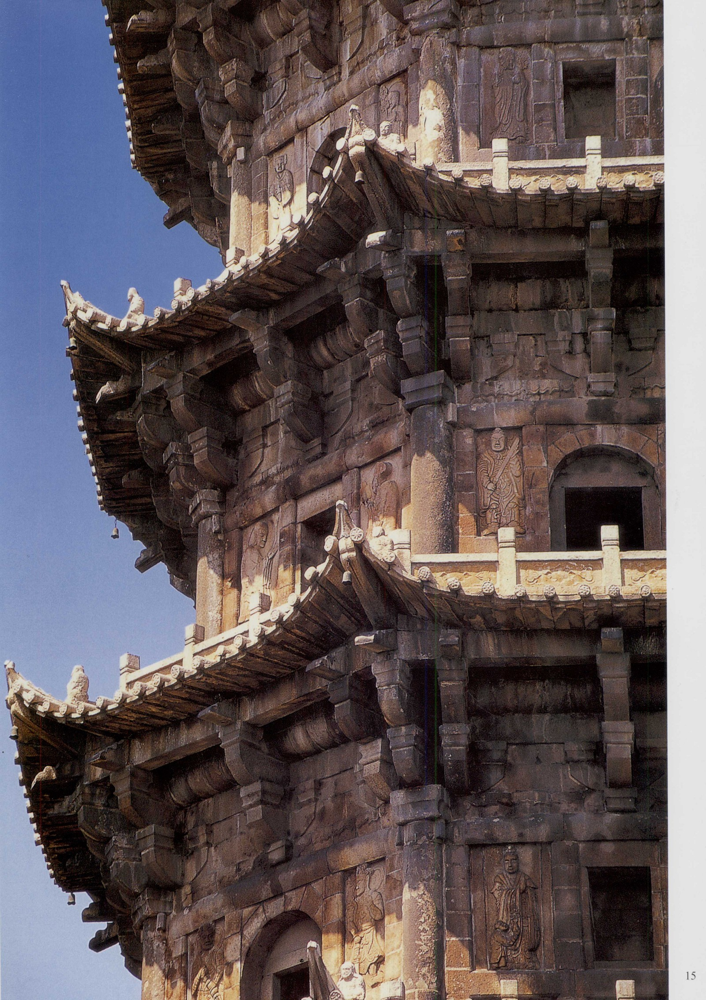

核心为榫卯结构，无需钉铆即可实现木构件的牢固连接，抬梁式、穿斗式构架为代表，兼具抗震与美观，是中式木构建筑的灵魂。

制瓦、烧瓦、铺瓦的全套技艺，筒瓦、板瓦、瓦当的烧制与安装，琉璃瓦的釉色工艺，体现等级与审美，兼具防水与装饰功能。

石材的开采、雕琢、砌筑，拱桥券石的拼接、柱础的雕刻、台基的砌筑，工艺精准，如赵州桥的拱券拼接误差不足毫米。
采用桐油浸泡、石灰涂敷、烟熏干燥等技法，结合樟木、楠木等耐腐木材，使木构件可保存数百年不腐，如故宫木柱至今完好。
选土、和泥、制坯、晾晒、烧制的精准把控，官窑砖瓦采用高岭土，经1200℃高温烧制，质地坚硬，吸水率极低。
梁枋彩绘使用桐油、朱砂、矿物颜料，不仅美观，还能隔绝潮气、防止虫蛀，和玺彩绘、旋子彩绘均含防腐配方。
糯米灰浆（糯米汁+石灰+砂石）的调制，强度高、密封性好，用于城墙、桥梁的勾缝，千年不渗水，是古代建筑的“水泥”。
模数化营造：以“材”“斗口”为基本模数，实现建筑构件的标准化生产与快速组装，提高营造效率。
抗震结构：榫卯的柔性连接、斗拱的缓冲作用，使建筑可抵御强烈地震，如应县木塔历经千年地震仍屹立。
自然适配：根据地域气候调整工艺，南方建筑的通风防潮处理、北方建筑的保温防寒工艺，因地制宜。
环保理念：采用天然材料，工艺无化学污染，建筑废弃后可自然降解，体现“天人合一”的生态观。